A vertical idle management mini-game. Players drag a spatula with a finger to grill patties for money, upgrade tools and recipes at the Training Center, and grow a roadside burger stand all the way into space.
Status: development complete. The software copyright application has been filed; once it is granted, the game will be registered and released as a Douyin mini-game.
01
A round of business lasts about 15 seconds, short enough to play between videos. Upgrades and moving shops provide mid-term goals; the “launch” prestige provides the long-term goal.
Drag the spatula over patties to cook them; cooked patties are served automatically. Flip them, dodge flames, grab items, shoo the cat.
Level N · 1–3 star targets, worth 10% / 20% / 35% bonus income by stars.
Heat, range, price, kitchen helpers… listed by category.
Roadside stand → food street → shopping mall: a new scene and double income.
Reset Earth progress for stars (permanent bonuses) and unlock the interstellar map: the Moon, Mars, Jupiter's rings and the galactic center.
After a launch you start over at the roadside stand, but with the star bonus each run is faster: 49 minutes for the first, 23 for the second and 11 for the third.
02

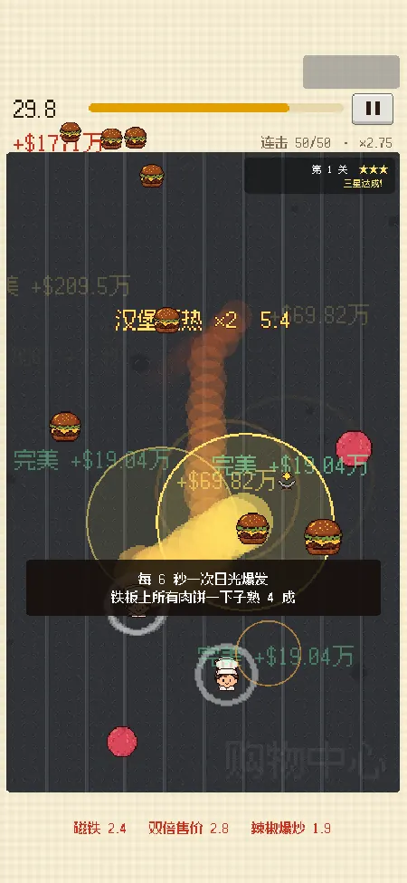
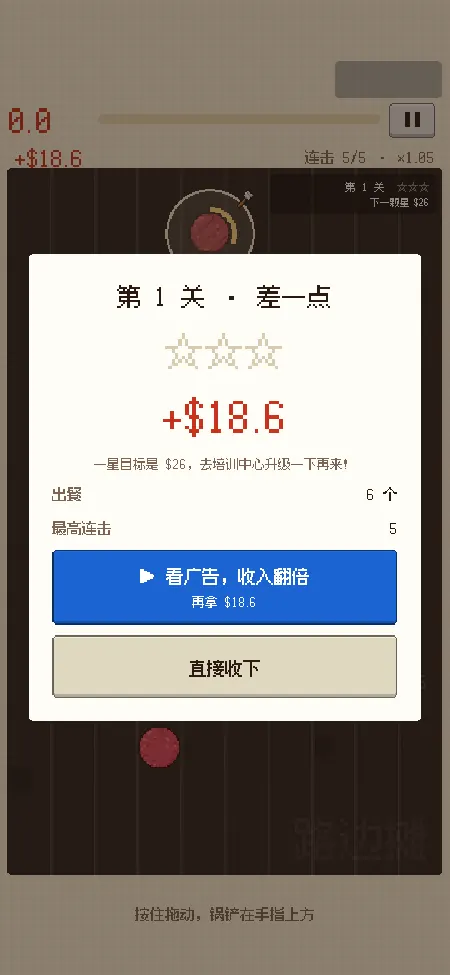
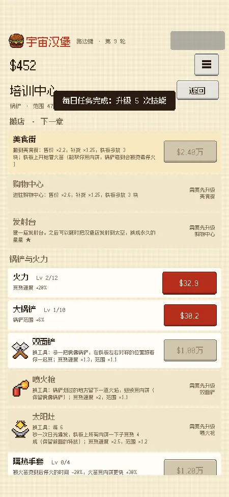
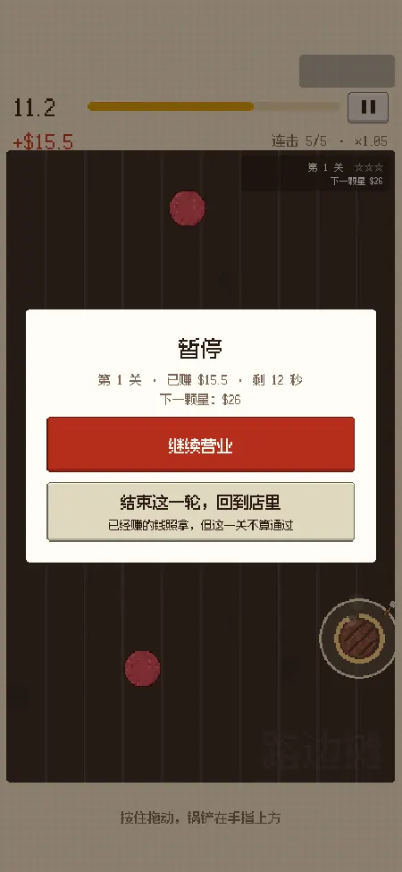
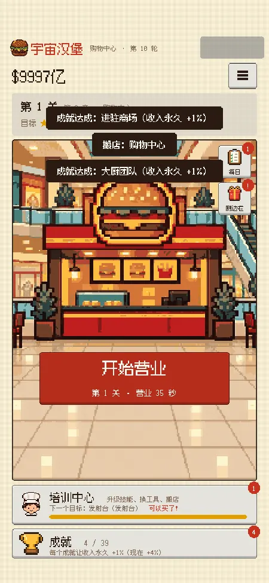
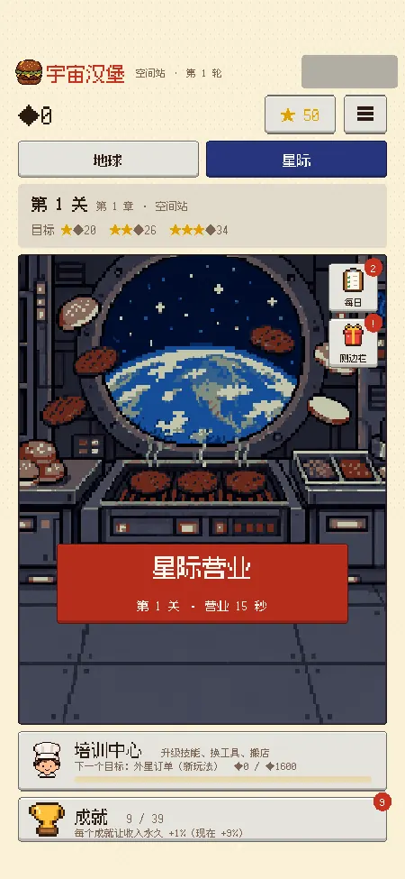
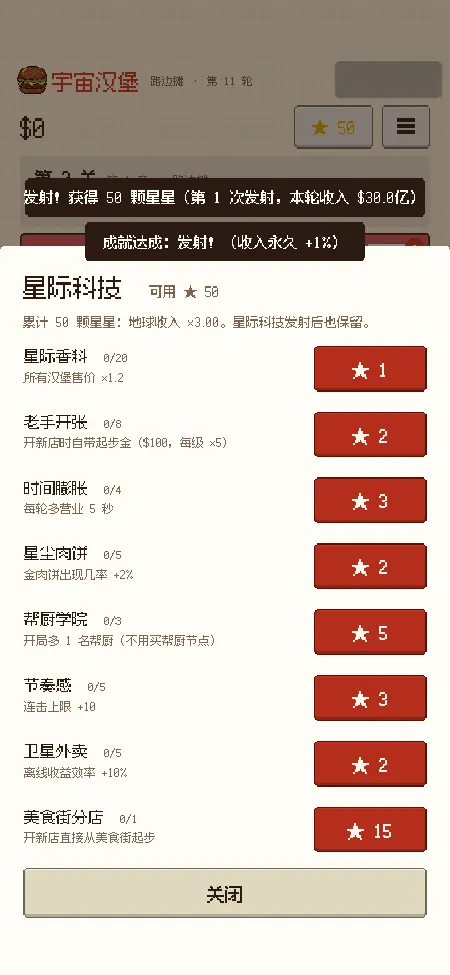
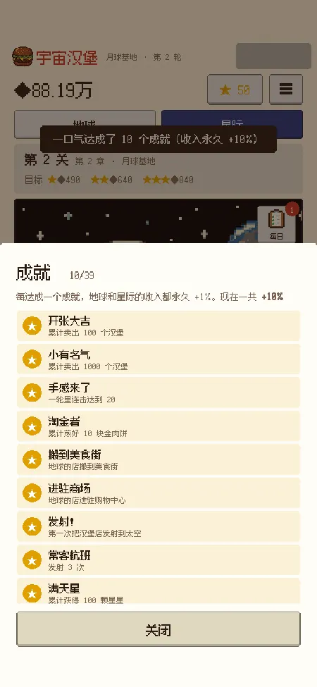
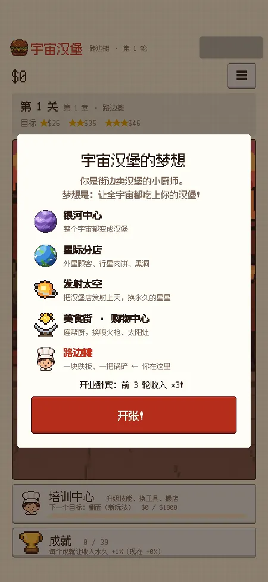
03
The two most common problems in management games are “why should I keep playing?” and “late game is just bigger numbers”. The designs below target both.
Every 5th level is a challenge level with double rewards, rotating through five rule sets: golden patty bonanza, patty frenzy, flames everywhere, slippery showdown and time rush.
In the earliest version, new tools only increased range, and testers soon got bored. Later every new tool gained a visible skill while keeping the skills of the tools before it:
04
Friends playtested on iPhone, and every round of feedback led to a revision. Listed in chronological order below.
| Playtest feedback | Change |
|---|---|
| The game area was too small on screen, with too much empty space at the top | UILay out the top bar from the position of Douyin's capsule button in the top right; the griddle height adapts between 720 and 880 to the screen |
| The interstellar home background showed only a small patch in the bottom-left corner on iPhone | TechiOS WebGL requires power-of-two sizes for tiled textures, so the texture became 128 px |
| The numbers were too big and tiring to read | BalanceRaised all prices and multipliers to the power of 0.7, then retuned to the original pacing with the simulator; numbers now display as 10K / 100M units; old saves convert automatically on load |
| It got boring after a while; tools only changed in range | GameplayTool skills, plus flipping, flames, items, slippery patties and Fever Time |
| The opening was not engaging enough, yet overall progress felt a bit fast | BalanceGrand opening and the round-4 golden patty speed up the start, while mid- and late-game prices go up across the board |
| Goals were unclear, there were no levels, and motivation was low | SystemsLevels with 1–3 stars, challenge levels and a “next goal” progress bar on the home screen |
| Players wanted to pause mid-round or quit early | UXA pause button; closing early keeps the money earned but does not clear the level; the game auto-pauses in the background |
| The home screen was cluttered and the skill tree was hard to read | UIReordered the home screen as “open for business → Training Center → achievements”; turned the skill tree into a list grouped by category; drew 9 new shop scenes |
| The spatula at max level was huge and nearly filled the screen | BalanceIt used to multiply +10% per level, giving a max radius of about 290 (on a 450-wide griddle). Now each level adds a flat 6% and tool bonuses are smaller, for about 100 at max; the double spatula gained cooking speed to compensate, and the simulator confirmed pacing slowed by only 5 minutes |
05
I wrote a bot player in the Unity editor that runs the game's own logic code to play automatically: it chases patties, grabs items, dodges flames and buys upgrades by value. Every price change is run through it first to check that the milestones below land within their target ranges.
The first launch at 49:14 earns 14 stars, at around level 53.
Interstellar completion time: 1:28:22.
Design intent: the first run is slower so players see every shop; after that, the star bonus makes each run faster, so the payoff of prestige is clearly felt.
06
Game logic and presentation are fully separated, so the same logic runs on phones and can also be driven by the simulator for automated runs.
Scripts/ Core/ pure logic: config, save data, formulas, round simulation GameConfig.cs all numbers and upgrades GameLogic.cs stat derivation, level targets, results Run.cs one round: patties, flames, cat, items Platform/ Douyin SDK, ads, saves, audio, haptics UI/ home, business screen, Training Center, pop-ups Editor/ PacingSim.cs pacing simulator BuildTools.cs command-line builds
Run after every change, with no manual clicking:
07
A consistent pixel style: one pixel equals 3 units on the canvas, and the 12 px pixel font is only used at multiples of 12 to stay crisp.
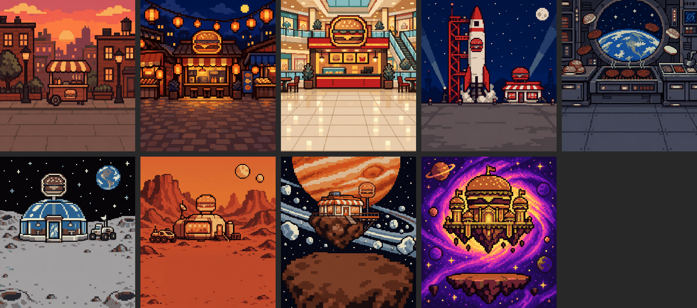
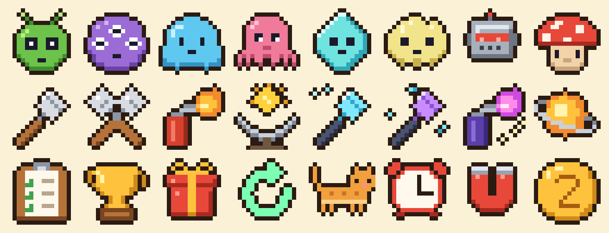
08
AI tools were used in development: Claude Code for writing code and debugging, and Scenario for the shop scene images. My part was the gameplay and systems design, balance targets and tuning decisions, organizing on-device playtests and turning feedback into revision requirements, signing off each version, and keeping the overall art style consistent.